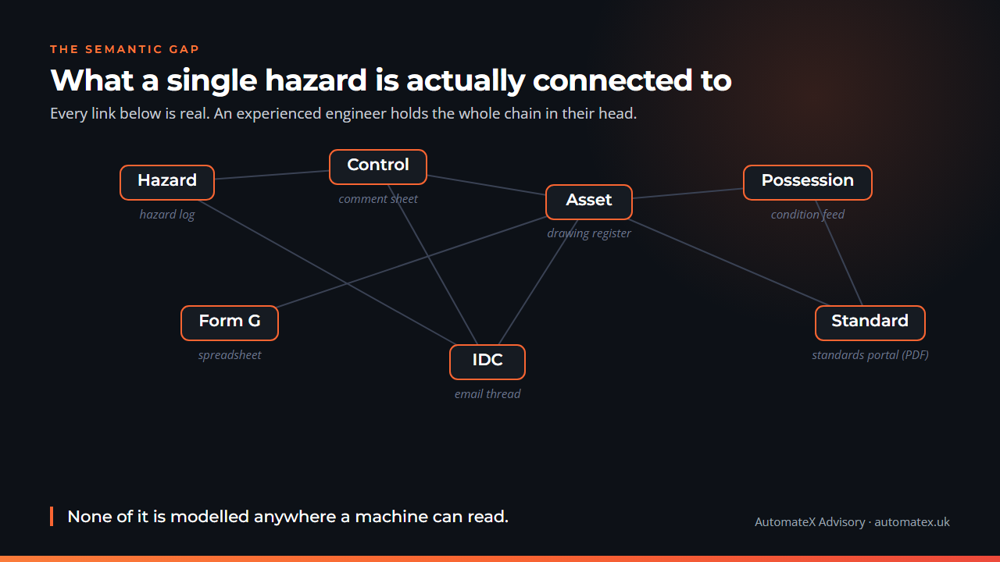
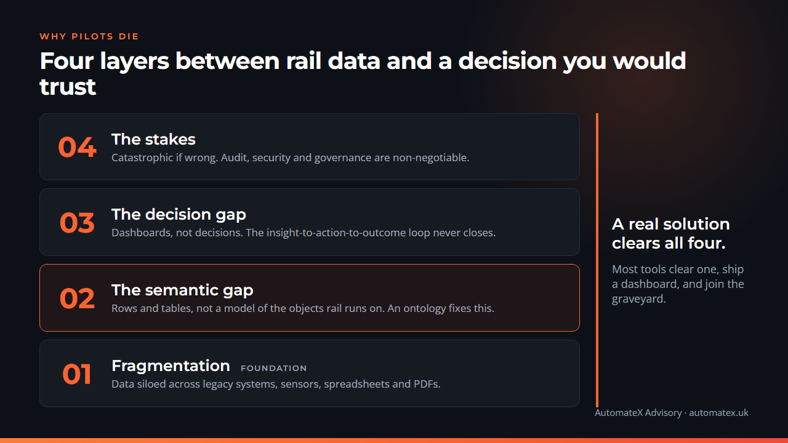

The railway's own AI Action Plan has a section titled "A pilot graveyard." It is the most honest line the sector has written about artificial intelligence.
The sector named its own problem
GBRX published Artificial Intelligence in Rail: The Industry Action Plan late last year, with a foreword from the Minister of State for Rail. Inside it is a phrase any engineer who has sat through a vendor demo will recognise. The plan describes "pilot confetti, followed by a growing pilot graveyard where initiatives struggle to overcome adoption barriers."
That is the industry diagnosing itself. Promising pilots that work in a controlled corner and never reach the operational railway. The plan is clear about why. Scaling a pilot, it says, "is far more demanding than the technical pilot itself."
This is not a rail problem alone. The Stanford Digital Economy Lab studied 51 successful AI deployments across 41 organisations this year. They opened with a figure from a 2025 MIT study: 95 percent of generative AI pilots produce no measurable financial impact. Accenture, they note, finds 80 to 85 percent of companies stuck in what it calls a "Proof of Concept Factory."
The instinct, every time, is to blame the model. Wrong tool. Not clever enough. Hallucinates.
Both documents say the opposite. Stanford's conclusion, after all 51 cases, is blunt. "The difference was never the AI model. It was always the organisation."
The difference was never the AI model. It was always the organisation.Stanford Digital Economy Lab, The Enterprise AI Playbook
What actually wins
Here is the reframe. The thing that makes AI work in a hard environment is not the model sitting on top. It is the layer underneath it.
Look at the company everyone in this space points to. Palantir spent the better part of two decades inside defence and intelligence work, some of the highest-stakes data environments on earth. People see the product. The dashboards, the apps, the demos.
The thing that actually won was underneath all of it. Palantir calls it the Ontology. Read their own documentation and it is described as "an operational layer for the organisation." It maps every object, every property and every relationship in the domain to its real-world counterpart, then adds the actions that change them. They call the result a "digital twin of the organisation." The applications sit on top of that twin. They do not exist without it.
That layer is the moat. Not the apps.
This is not one American company's marketing. Stanford reached the same conclusion from the other direction. Across the deployments that worked, "the durable advantage is in the orchestration layer, not the foundation model." Forty-seven percent of the firms they studied described their accumulated, structured data as a competitive moat in its own right. One had spent thirteen years building a knowledge graph of twenty billion data points, and told the researchers plainly that it was the reason customers bought from them.
The model is becoming a commodity. The layer that understands your world is not.
Rail is the hardest version of this
Now hold rail up against that.
Rail is knowledge-intensive. It is relationship-heavy. Its data lives in PDFs, emails, drawing registers, condition-monitoring feeds and a hundred systems that were never designed to talk to each other. And it is operationally critical, which means being wrong is measured in safety, not in a slightly worse click-through rate.
The Action Plan is candid about this. "Fragmentation across track and train, assets and operations, and public and private organisations fundamentally shapes how technology is adopted in the railway."
Think about what a single hazard actually is. A hazard links to a control. The control links to an asset. The asset sits within a possession. The possession is governed by a standard, and that standard references a dozen more. Every one of those links is real. An experienced engineer holds the whole chain in their head. Almost none of it is modelled anywhere a machine can read.
AI is only as smart as the data and infrastructure beneath it. Even the best models are just expensive guesses dressed up as insight.Richard Adams, Group Head of Architecture, DfT Operator Ltd

The sector knows this now. The same plan commits to shared data foundations and a federated data environment, and it uses a word that would have sounded exotic in a rail document five years ago. Ontologies. It lists the development of standards and ontologies as a named action. The destination is agreed. The hard part is the journey.
Four layers, and most tools touch one
Strip it back and the reason pilots die is not mysterious. There are four layers between raw rail data and a decision you would trust on the operational railway. Most tools solve one of them, ship a dashboard, and call it done.
- Layer one: fragmentation. The data is scattered. Stanford found 59 percent of organisations had data spread across systems owned by different teams, and only 16 percent had it centralised. The useful finding is what came next. Success did not require centralising everything. It required access. You have to be able to reach the data, wherever it sits.
- Layer two: the semantic gap. Suppose you connect it all. You still have rows and tables. A spreadsheet does not know that a hazard, a control and an asset are different kinds of thing that relate in specific ways. Modelling those things, the objects your organisation actually runs on, is the work. This is the layer rail keeps skipping.
- Layer three: the decision gap. Analytics give you a dashboard. A dashboard is not a decision. The loop from insight to action to outcome has to close, and in most pilots it never does. As Stanford puts it, agentic AI "isn't a new UI. It's a redefinition of the role of humans and machines in the workflow." In one case, before automation, "a human buyer was the integration layer." That is what the missing layers cost you. People become the glue.
- Layer four: the stakes. This is where rail stops resembling a marketing department. Get a campaign wrong and you resend the email. Get an assurance decision wrong and the consequences are different in kind. Robert Ampomah, Chief Technology Officer at Network Rail, said it in the Action Plan. "AI doesn't fix the system, it simply amplifies its weaknesses." Stanford put the same truth in one line. "If the process is broken, AI makes it worse faster."
Rail has all four layers. Most tools clear one.

You cannot pilot your way past a layer you skipped.
The objection
There is a fair objection to all of this, and the Stanford work makes it. You do not need perfect data before you start. Only six percent of their successful deployments had data that was fully ready. Their advice is almost the opposite of a tidy-everything-first project. "Store everything, connect it, and let the models do the cleaning."
I agree with that, and it matters. This is not an argument for a three-year data-cleansing programme before anyone is allowed to touch AI. That is its own kind of graveyard.
The point is narrower. The work is connecting and modelling, not scrubbing. The half of "store everything, connect it" that rail keeps dropping is the connecting. Connect the systems, model the relationships, and you have the semantic layer. Skip it, and you have a faster way to produce expensive guesses.
You cannot buy the foundation
So where does that leave a rail business looking at AI?
The foundation cannot be bought off a shelf. The semantic layer for rail is not a generic software component. It is a model of how rail actually works, and it can only be built by someone who knows what a hazard log is, what an Inter-Disciplinary Check is for, what a Form G has to satisfy, and how all three connect. That is domain work before it is software work.
This is why rail has been underserved for so long. The firms with the AI could not see the relationships. The firms who could see the relationships were busy delivering the railway. The overlap has been thin.
It is also where the opportunity sits. The Action Plan has set the direction for the whole sector. The advantage will go to whoever does the unglamorous middle work first. Modelling the domain. Connecting the systems. Closing the loop into the deliverables and the assurance trail the railway already trusts.
And to be clear about what this does to the people who do the work. It does not replace them. It removes the fragmentation that currently eats their week, the hunting across five systems for one answer, so that experienced engineers spend their time on judgement instead of retrieval. The same team, doing more of the work only they can do.
You cannot build on a foundation you never poured. Every failed pilot died somewhere specific. Not in the model. In one of the four layers underneath it.
If your last one stalled, it is worth knowing which layer it actually died on. That answer tells you what to build next. I run a CPD session for rail teams on exactly this, the layers underneath an AI deliverable and how to build them in the right order. Book one here: calendly.com/bill-guo-automatex/cpd